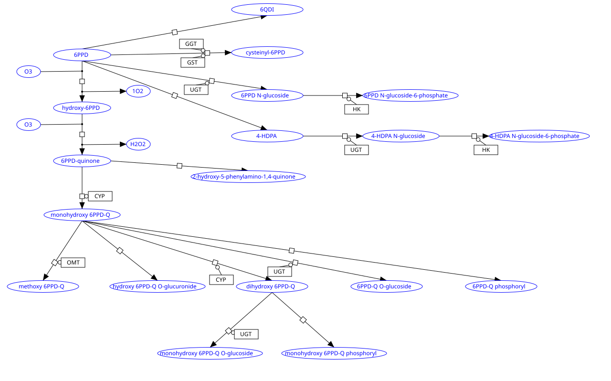

6 articles with full text in Europe PMC: seed articles from Wikidata and articles added by hand. In each page the chemical structures in ChEBI, the other ontology terms on ExpoPortal and the sentences that support a pathway are highlighted.
Acute Toxicity Testing of the Tire Rubber–Derived Chemical 6PPD‐quinone on Atlantic Salmon (Salmo salar) and Brown Trout (Salmo trutta)
Environmental Toxicology and Chemistry · 2022 · doi:10.1002/etc.5487 · PMC9828523
Advances in Analytical Determination Methods and Toxicity and Health Risk Assessment of 6PPD and Its Transformation Products in Food
Toxics · 2025 · doi:10.3390/toxics13121076 · PMC12737381
Analysis of Multiple Tire Rubber-Derived Chemicals in Fish Bile and Plasma: Analytical Method and Field Assessment in Puget Sound, WA, USA
Environmental Science & Technology · 2026 · doi:10.1021/acs.est.6c07136 · PMC13689822
Biotransformation of Tire-Derived 6PPD and 6PPD‑Q in Soil Nematode Caenorhabditis elegans: Unraveling Novel Phosphorylation Products and Distinct Kinetic Profiles
Environmental Science & Technology · 2025 · doi:10.1021/acs.est.5c02072 · PMC12288073
Investigation of 6PPD-Quinone in Rubberized Asphalt Concrete Mixtures
ACS Environmental Au · 2023 · doi:10.1021/acsenvironau.3c00023 · PMC10655589
Tire-Derived Transformation Product 6PPD-Quinone Induces Mortality and Transcriptionally Disrupts Vascular Permeability Pathways in Developing Coho Salmon
Environmental Science & Technology · 2023 · doi:10.1021/acs.est.3c01040 · PMC10399305
Seed articles without a page 20
These articles are in the seeds, but are not annotated here because Europe PMC does not offer their full text as open access XML.
In Europe PMC, but without full text 11
- A bibliometric analysis of global research hotspots and progress on emerging environmental pollutants 6PPD and 6PPD-quinone from 2004 to 2024 6PPD 6PPD-Q
doi:10.1016/j.envpol.2024.124969 · Europe PMC · Wikidata - A ubiquitous tire rubber-derived chemical induces acute mortality in coho salmon 6PPD 6PPD-Q
doi:10.1126/science.abd6951 · Europe PMC · Wikidata - Abiotic oxidative transformation of 6-PPD and 6-PPD quinone from tires and occurrence of their products in snow from urban roads and in municipal wastewater 6PPD 6PPD-Q
doi:10.1016/j.watres.2022.118122 · Europe PMC · Wikidata - Acute Toxicity of 6PPD-Quinone to Early Life Stage Juvenile Chinook ( Oncorhynchus tshawytscha ) and Coho ( Oncorhynchus kisutch ) Salmon 6PPD-Q
doi:10.1002/etc.5568 · Europe PMC · Wikidata - Association between 6PPD-quinone exposure and BMI, influenza, and diarrhea in children 6PPD-Q
doi:10.1016/j.envres.2024.118201 · Europe PMC · Wikidata - Chronic toxicity and intergenerational effects of N-(1,3-dimethylbutyl)-N’-phenyl-p-phenylenediamine (6PPD) exposure alone and in combination with Zn2+ on Daphnia magna (Cladocera) 6PPD
doi:10.1007/s10646-024-02836-x · Europe PMC · Wikidata - Exploration of emerging environmental pollutants 6PPD and 6PPDQ in honey and fish samples 6PPD
doi:10.1016/j.foodchem.2022.133640 · Europe PMC · Wikidata - Interspecies Differences in 6PPD-Quinone Toxicity Across Seven Fish Species: Metabolite Identification and Semiquantification 6PPD-Q
doi:10.1021/acs.est.3c06891 · Europe PMC · Wikidata - Neurological impairment is crucial for tire rubber-derived contaminant 6PPDQ-induced acute toxicity to rainbow trout 6PPD-Q
doi:10.1016/j.scib.2023.12.045 · Europe PMC · Wikidata - Potential human health risk of the emerging environmental contaminant 6-PPD quinone 6PPD-Q
doi:10.1016/j.scitotenv.2024.175057 · Europe PMC · Wikidata - The joint effects of salt and 6PPD contamination on a freshwater herbivore 6PPD
doi:10.1016/j.scitotenv.2022.154675 · Europe PMC · Wikidata
Full text in Europe PMC, but not open access 2
- Bioactivity of the ubiquitous tire preservative 6PPD and degradant, 6PPD-quinone in fish- and mammalian-based assays 6PPD 6PPD-Q
doi:10.1093/toxsci/kfaf008 · Europe PMC · Wikidata - Urine Excretion, Organ Distribution, and Placental Transfer of 6PPD and 6PPD-Quinone in Mice and Potential Developmental Toxicity through Nuclear Receptor Pathways 6PPD 6PPD-Q
doi:10.1021/acs.est.3c05026 · Europe PMC · Wikidata
Not in Europe PMC 7
- Acute Toxicity of the Tire Rubber-Derived Chemical 6PPD-quinone to Four Fishes of Commercial, Cultural, and Ecological Importance 6PPD 6PPD-Q
doi:10.1021/acs.estlett.2c00050 · Wikidata - Assessment of Tire-Additive Transformation Product 6PPD-Quinone in Urban-Impacted Watersheds 6PPD-Q
doi:10.1021/acsestwater.3c00589 · Wikidata - Computation-Guided Removal of 6PPD from End-of-Life Waste Tires 6PPD
doi:10.1021/acssusresmgt.4c00307 · Wikidata - Establishing an In Vitro Model to Assess the Toxicity of 6PPD-Quinone and Other Tire Wear Transformation Products 6PPD-Q
doi:10.1021/acs.estlett.3c00196 · Wikidata - Exposure to the Tire Rubber-Derived Contaminant 6PPD-Quinone Causes Mitochondrial Dysfunction In Vitro 6PPD 6PPD-Q
doi:10.1021/acs.estlett.2c00431 · Wikidata - Influence of Surface Migration of 6PPD as an Amine Type Antioxidant on Ozone Resistance of Vulcanized Rubber 6PPD
doi:10.2324/gomu.92.3 · Wikidata - Occurrence of Polymer Additives 1,3-Diphenylguanidine (DPG), N -(1,3-Dimethylbutyl)- N ′-phenyl-1,4-benzenediamine (6PPD), and Chlorinated Byproducts in Drinking Water: Contribution from Plumbing Polymer Materials 6PPD
doi:10.1021/acs.estlett.3c00446 · Wikidata
1 pathway, one for every GPML file. The pathway page shows the structures, the species and the supporting sentences from the articles.
6PPD transformations
22 metabolites, 18 conversions, 6 enzyme families (CYP, GGT, GST, HK, OMT, UGT), 5 references.
